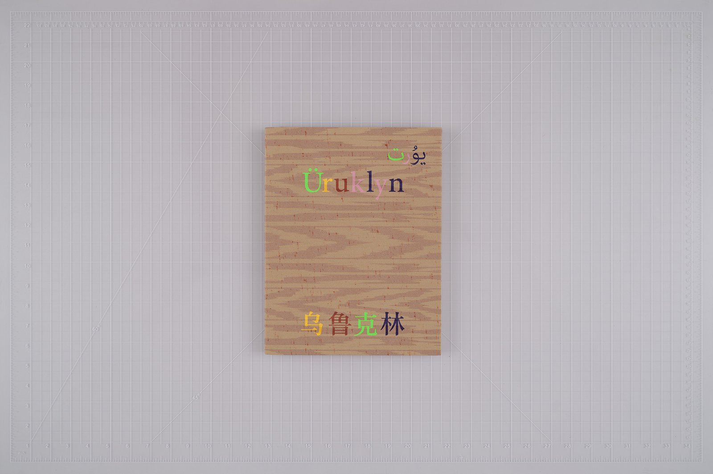
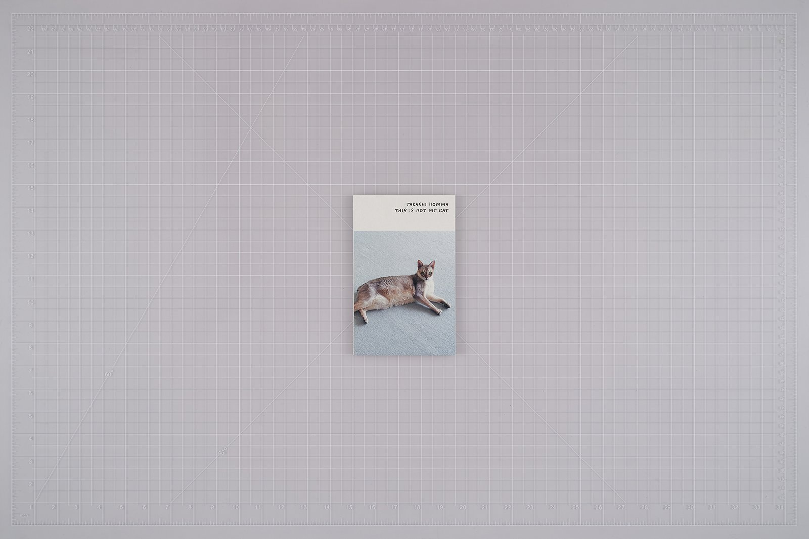
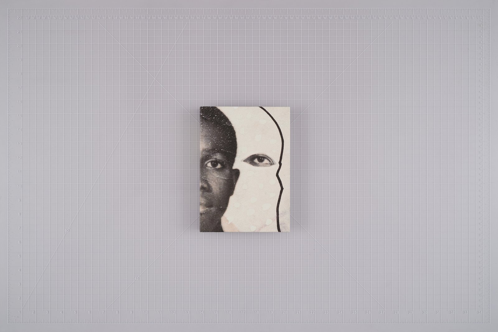
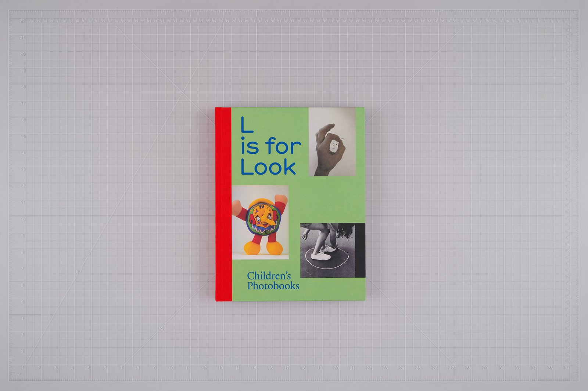

사진집 한 권을 펼치면 먼저 잘 찍은 사진 몇 장이 눈에 들어온다. 그런데 같은 사진이라도 어떤 순서로 놓이는지, 옆 쪽에 무엇이 오는지, 손에 쥔 책이 얼마나 큰지에 따라 읽히는 방식이 달라진다. 좋은 사진집은 사진 한 장의 완성도만으로 정해질까?
올해 파리 포토–아퍼처 사진집상(Paris Photo–Aperture PhotoBook Awards) 최종 후보가 이 질문을 다시 꺼내게 한다. 아퍼처 재단은 10월 8일 세 부문 35권의 최종 후보를 발표했다. 수상작은 11월 13일 파리 포토 현장과 온라인에서 발표된다.
세 부문, 서로 다른 기준
첫 사진집상(First PhotoBook)은 작가의 첫 사진집에 준다. 최종 후보는 20권이고 상금은 1만 달러다. 올해의 사진집상(PhotoBook of the Year)은 작가와 출판사에 함께 돌아간다. 책을 만든 쪽의 몫까지 인정한다는 뜻이고, 후보는 10권이다. 올해의 사진 도록상(Photography Catalog of the Year)은 전시 도록과 미술관 출판물 가운데서 고르며, 후보는 5권이다.
이 글에서는 세 부문에서 네 권을 골랐다. 편집부는 아직 실물을 보지 못했다. 출판사와 작가가 공개한 설명, 판매처 정보, 리뷰에서 확인되는 범위만 적는다.
「Üruklyn」, 두 도시의 이름을 합친 첫 책

첫 사진집 부문의 마하이룬(Ma Hailun)은 신장 우루무치에서 태어나 뉴욕에서 사진을 공부했다. 책 제목은 우루무치(Ürümqi)와 브루클린(Brooklyn)을 합친 말이다. 2021년에 시작한 작업으로, 우루무치와 카슈가르 주민들을 촬영에 초대해 패션 사진의 방식으로 고향을 기록했다. 중국 닝보의 출판사 자자지(Jiazazhi)가 냈고, 출판사 설명에 따르면 실크스크린 표지를 씌운 180쪽 책이다. 패션 사진의 연출과 한 지역의 일상이 한 권 안에서 겹친다. 연출한 사진을 그곳의 기록으로 읽어도 되는지, 독자가 스스로 따져 보게 만드는 책이다.
같은 부문에는 디트로이트의 흑인 사교계 데뷔 무도회를 2022년부터 2025년까지 찍은 미란다 반스(Miranda Barnes)의 「Social Season」도 올랐다.
「This Is Not My Cat」, 손바닥만 한 책

올해의 사진집 부문에는 혼마 다카시(Takashi Homma)의 「This Is Not My Cat」이 올랐다. 취리히의 니에베스(Nieves)와 멜버른의 퍼리미터 에디션스(Perimeter Editions)가 2025년에 함께 냈다. 출판사가 밝힌 판형은 11.2×17.8cm, 80쪽 남짓의 소프트커버다. 아퍼처가 같은 바탕 위에서 찍은 표지 사진을 나란히 놓으면 이 책만 눈에 띄게 작다. 도쿄의 소박한 아파트 안을 돌아다니는 고양이를 따라가고, 무릎이나 발, 얼굴 반쪽처럼 사진가의 몸 일부가 이따금 화면에 들어온다. 제목을 보면 그의 전작 「Tokyo and My Daughter」가 떠오른다. 그 책의 소녀는 혼마의 딸이 아닌 지인의 딸이었다. 사진에 붙인 한 줄의 말이 사진을 어떻게 읽게 만드는지, 작은 책 한 권으로 다시 묻는다.
「Passports, 2012–2025」, 한 장을 삼백 번

키샤 스카빌(Keisha Scarville)의 책은 아버지의 가장 오래된 여권 사진 한 장에서 출발한다. 작가는 그 사진을 300번 넘게 다시 만졌다. 물감과 구슬, 금박, 글리터를 올리고 흑인의 몸을 찍은 다른 사진 조각을 붙였다. 책에는 1960년대부터 1980년대 사이 가이아나와 뉴욕에서 찍은 옛 사진, 아버지와 나눈 대화를 옮겨 적은 글, 연구자 티나 M. 캠프트(Tina M. Campt)의 글이 함께 실렸다. 출판사는 MACK 이다. 같은 얼굴이 수백 번 되풀이되는 작업은 낱장으로 보면 변주다. 책으로 묶이는 순간 순서가 생기고, 여권 사진을 중립적인 증명으로 보던 눈을 어디서부터 흔들지는 그 순서가 정한다. 이런 책에서는 편집이 사진만큼 무겁다.
「L Is for Look」, 어린이 사진책의 역사

도록 부문의 「L Is for Look: Children's Photobooks」는 어린이 사진책의 역사를 다룬 전시 도록이다. 안 라코스트(Anne Lacoste)와 로즈 뒤르(Rose Durr)가 엮었고 라이프치히의 스펙터 북스(Spector Books)가 냈다. 1930년대부터 지금까지 여러 나라에서 나온 어린이 사진책 100여 권을 모았다. 전시는 프랑스 릴의 사진 연구소(Institut pour la photographie)와 스위스 로잔의 포토 엘리제(Photo Elysée)가 함께 만들었고, 로잔에서 2026년 2월 1일까지 열렸고, 2028년까지 유럽 여러 도시를 도는 순회가 예정돼 있다. 사진책이라는 형식 자체를 다시 들여다보는 책이라, 올해 후보 가운데 이 상의 질문과 가장 가까이 닿아 있다.
11월 13일
수상작은 11월 13일 오후 3시(중앙유럽 표준시) 파리 포토에서 발표된다. 한국 시각으로는 같은 날 밤 11시다. 35권 전체 목록과 각 책의 설명은 아퍼처의 발표 페이지에서 볼 수 있다. 상이 어느 책에 가든, 후보 목록을 한 번 훑어보면 올해의 사진집이 어떤 모양으로 만들어지고 있는지 알 수 있다.